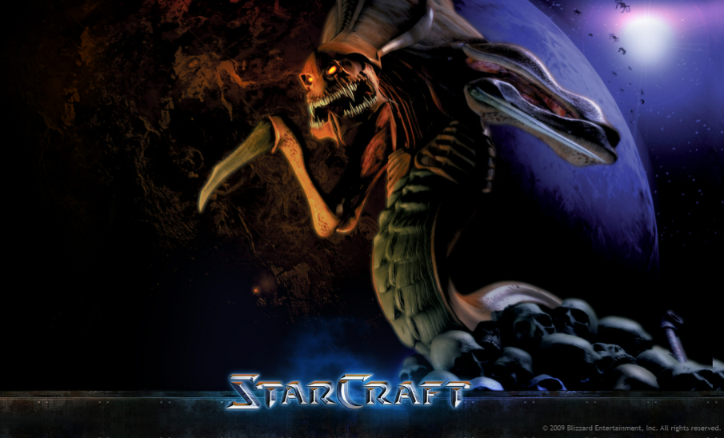

This is my favorite 3D action RPG of all time, there is no other else epic than Commander Shepard saving the universe from the Reapers.
Even though it is getting many hate by people, I really love the world in dark souls 2. Also with its perks that it can run on a potato PC or laptop. Awesome style of combat here is the class Sorcerer with many spells and cool effects appearing at the end of your staves.
Has a similarity with Mass Effect, but one of the most memorable Real-Time Strategy game (RTS). 3 races, fighting each other for survival, politics, and for love. What else you could ask for more?
